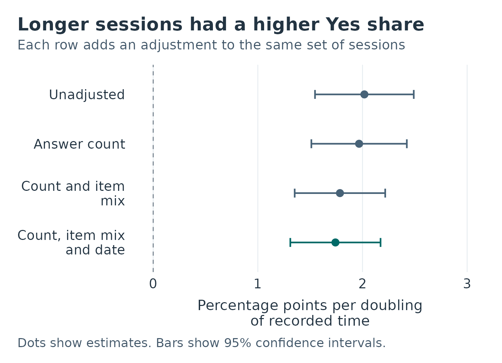

A daily study of the self
Did longer survey sessions have a higher share of Yes answers?

Ipseity Daily asks adults whether words or phrases such as “trusting” describe them today. Do people who take longer to finish say Yes more often? A session could take longer because it contains more questions, and some signifiers may invite more Yes answers than others. In the survey records, longer sessions had a higher share of Yes answers even after accounting for how many questions people answered and which signifiers they answered. The association was smaller when comparing different sessions from the same person.
What the survey records capture
The snapshot contains 799,580 answers from 10,239 respondent-days and 5,491 unique respondents, covering July 8, 2025, through November 23, 2026. A respondent-day combines a person's answers on a given date. It serves as the session because the recorded completion time belongs to the whole set of answers. Four respondent-days lacked timing data. The analysis used the remaining 799,268 answers from 10,235 sessions and 5,489 respondents. Across those sessions, the average Yes share was 34.80%.
The Yes share is the number of Yes answers divided by the number of recorded answers in that session. A question could be presented and skipped, leaving no row in the file. The data therefore reveal which questions each person answered. The Yes share and both adjustments for question content refer to that answered list. Each session counted equally in the analysis, including sessions with fewer recorded answers.
Comparing sessions with different questions
I used a regression to estimate how much the Yes share differed when recorded time doubled. Measuring time in doublings puts proportional differences on the same scale across shorter and longer sessions. The uncertainty calculations group sessions from the same person, allowing their answers across dates to be related.
The first adjustment allows each answer count to have its own baseline Yes share. The next accounts for which signifiers were answered. Each timed session had a distinct answered list, so the model estimates a separate contribution for each signifier and combines those contributions according to the mix of items in the session. In effect, the comparison accounts for the tendency of particular words or phrases to draw Yes answers. The last adjustment compares sessions on the same date, accounting for changes across survey days in the questions, the people who took part, or other conditions they shared.
A higher Yes share after adjustment
Before adjustment, a doubling of recorded completion time was associated with a Yes share that was 2.02 percentage points higher, with a 95% confidence interval from 1.55 to 2.49 points. The estimated difference was 1.97 points after adjusting for answer count and 1.78 points after also accounting for the item mix. With date included, the difference was 1.74 points, with a confidence interval from 1.31 to 2.17 points.
The figure shows how the estimates move toward zero as the adjustments are added. The horizontal bars show the uncertainty around each estimate, and all sit on the positive side of zero. Keeping times between the first and 99th percentiles gave a fully adjusted estimate of 2.28 points, with an interval from 1.84 to 2.71 points. The association stayed positive, while its size depended on which durations the model included.
Comparing people with their own earlier or later sessions
The repeat-participant analysis used 503,293 answers from 6,454 sessions and 1,708 people. With answer count, item mix, and date accounted for, the estimate was 1.81 points when those sessions were pooled and 0.56 points when each person was compared with themselves. The interval for the within-person estimate ran from 0.17 to 0.95 points. The gap between those estimates shows why it matters whether the comparison is across people or across different sessions from the same person. Within-person comparisons account for stable traits such as someone's usual pace or tendency to say Yes.
What the clock can tell us
The time field gives a total for the session. Reading carefully, hesitating over a word, and stepping away from the screen could all lengthen it. A participant's mood or circumstances could also influence both their pace and their answers. The analysis leaves open whether taking longer changes how people respond or whether some other feature of the session accounts for the association. The item adjustment can account for individual signifiers, while the effects of particular combinations and the order of questions remain uncertain.
These estimates describe the adults who completed and consented to the survey in the observed sessions. The analysis retained responses with unavailable demographics, and the survey records provide limited grounds for generalizing to all U.S. adults.
Read the complete R analysis
#!/usr/bin/env Rscript
suppressPackageStartupMessages(library(tidyverse))
input_path <- Sys.getenv("IPSEITY_DATA_PATH", "data/ipseity.csv.gz")
expected_columns <- c(
"endorsed", "signifier", "observation_date", "hashed_respondent_id",
"demographics_status", "age", "sex", "ethnicity", "birth_country",
"residence_country", "nationality", "language", "student", "employment",
"time_on_task", "approvals"
)
responses <- read_csv(
input_path,
col_types = cols(
.default = col_character(),
endorsed = col_integer(),
observation_date = col_date(format = "%Y-%m-%d"),
time_on_task = col_double()
),
show_col_types = FALSE,
progress = FALSE
)
stopifnot(
identical(names(responses), expected_columns),
nrow(problems(responses)) == 0L,
all(responses$endorsed %in% c(0L, 1L)),
all(!is.na(responses$observation_date)),
all(!is.na(responses$signifier) & nzchar(responses$signifier)),
all(str_detect(responses$hashed_respondent_id, "^[0-9a-f]{12}$") %in% TRUE),
all(responses$demographics_status %in% c("available", "consent_revoked", "data_expired")),
anyDuplicated(select(responses, hashed_respondent_id, observation_date, signifier)) == 0L
)
item_levels <- sort(unique(responses$signifier), method = "radix")
responses <- responses |>
transmute(
respondent = hashed_respondent_id,
observation_date,
item = match(signifier, item_levels),
endorsed,
time_on_task
) |>
group_by(observation_date, respondent) |>
mutate(session = cur_group_id()) |>
ungroup()
# The export time is a session-level measure even though it appears on each row.
# An unambiguous positive time is required. Missing copies of a valid time do not
# invalidate the other response rows from the session.
sessions <- responses |>
arrange(session) |>
summarise(
observation_date = first(observation_date),
respondent = first(respondent),
answers = n(),
endorsed_pct = 100 * mean(endorsed),
observed_times = n_distinct(time_on_task, na.rm = TRUE),
recorded_time = first(time_on_task[!is.na(time_on_task)]),
answered_set = paste(sort(item), collapse = ","),
.by = session
)
timed_sessions <- sessions |>
filter(observed_times == 1L, is.finite(recorded_time), recorded_time > 0) |>
mutate(log_time = log2(recorded_time))
# Scale each item indicator by the session's answer count. This gives an
# additive adjustment for the mix of items on the same scale as the Yes share.
# The separate count factor permits a different intercept for each answer count.
session_row <- match(responses$session, timed_sessions$session)
has_time <- !is.na(session_row)
item_mix <- matrix(0, nrow(timed_sessions), length(item_levels))
item_mix[cbind(session_row[has_time], responses$item[has_time])] <-
1 / timed_sessions$answers[session_row[has_time]]
count_controls <- model.matrix(~ 0 + factor(answers), data = timed_sessions)
date_controls <- model.matrix(~ 0 + factor(observation_date), data = timed_sessions)
item_controls <- cbind(count_controls, item_mix)
full_controls <- cbind(item_controls, date_controls)
# Frisch-Waugh-Lovell residualization gives the same time slope as including
# all controls in the regression. QR handles redundant control columns.
# After residualizing, compute a cluster-robust variance for the time slope
# from the sum of residual-time times model-error within each respondent.
estimate_slope <- function(data, controls, within_respondent = FALSE) {
variables <- cbind(log_time = data$log_time, endorsed_pct = data$endorsed_pct)
respondent_groups <- n_distinct(data$respondent)
absorbed_rank <- 0L
if (within_respondent) {
demean <- function(values) {
totals <- rowsum(values, data$respondent)
group_row <- match(data$respondent, rownames(totals))
group_sizes <- tabulate(group_row, nbins = nrow(totals))
values - (totals / group_sizes)[group_row, , drop = FALSE]
}
variables <- demean(variables)
controls <- demean(controls)
absorbed_rank <- respondent_groups
}
control_qr <- qr(controls, tol = 1e-9)
residuals <- qr.resid(control_qr, variables)
time_residual <- residuals[, "log_time"]
yes_residual <- residuals[, "endorsed_pct"]
time_sum_squares <- sum(time_residual^2)
estimate <- sum(time_residual * yes_residual) / time_sum_squares
errors <- yes_residual - estimate * time_residual
cluster_scores <- rowsum(time_residual * errors, data$respondent)
n <- nrow(data)
residual_df <- n - control_qr$rank - absorbed_rank - 1L
stopifnot(time_sum_squares > 0, respondent_groups > 1L, residual_df > 0L)
correction <- respondent_groups / (respondent_groups - 1) * (n - 1) / residual_df
std_error <- sqrt(correction * sum(cluster_scores^2)) / time_sum_squares
critical_value <- qt(0.975, df = respondent_groups - 1L)
tibble(
estimate = estimate,
lower = estimate - critical_value * std_error,
upper = estimate + critical_value * std_error,
responses = sum(data$answers),
sessions = n,
respondents = respondent_groups
)
}
main_estimates <- bind_rows(
"Unadjusted" = estimate_slope(timed_sessions, matrix(1, nrow(timed_sessions), 1L)),
"Answer count" = estimate_slope(timed_sessions, count_controls),
"Count and item mix" = estimate_slope(timed_sessions, item_controls),
"Count, item mix and date" = estimate_slope(timed_sessions, full_controls),
.id = "model"
)
tail_probabilities <- c(0.01, 0.99)
tail_cutoffs <- quantile(timed_sessions$recorded_time, tail_probabilities, names = FALSE)
central_times <- between(timed_sessions$recorded_time, tail_cutoffs[1], tail_cutoffs[2])
repeat_respondents <- timed_sessions |>
mutate(repeated = n() > 1L, .by = respondent) |>
pull(repeated)
repeat_sessions <- timed_sessions[repeat_respondents, ]
repeat_controls <- full_controls[repeat_respondents, , drop = FALSE]
sensitivity_estimates <- bind_rows(
"Count, item mix and date, excluding tails" = estimate_slope(
timed_sessions[central_times, ], full_controls[central_times, , drop = FALSE]
),
"Count, item mix and date, pooled repeat respondents" = estimate_slope(
repeat_sessions, repeat_controls
),
"Count, item mix and date, within repeat respondents" = estimate_slope(
repeat_sessions, repeat_controls, within_respondent = TRUE
),
.id = "model"
)
format_rows <- function(estimates) {
with(estimates, sprintf(
"%s | %+.2f | [%+.2f, %+.2f] | %d | %d | %d",
model, estimate, lower, upper, responses, sessions, respondents
))
}
write_lines(
c(
sprintf("Full data: %d answers, %d respondent-days, %d unique respondents.",
sum(sessions$answers), nrow(sessions), n_distinct(sessions$respondent)),
sprintf("Observation dates: %s through %s, %d observed dates.",
min(sessions$observation_date), max(sessions$observation_date),
n_distinct(sessions$observation_date)),
sprintf("Usable duration: %d answers, %d respondent-days, %d unique respondents.",
sum(timed_sessions$answers), nrow(timed_sessions),
n_distinct(timed_sessions$respondent)),
sprintf("Excluded for missing, conflicting or nonpositive duration: %d respondent-days.",
nrow(sessions) - nrow(timed_sessions)),
sprintf("Respondent-days with all duration values missing: %d.",
sum(sessions$observed_times == 0L)),
sprintf("Distinct answered sets among timed respondent-days: %d.",
n_distinct(timed_sessions$answered_set)),
sprintf("Most common answered count: %d answers.",
as.integer(names(which.max(table(timed_sessions$answers))))),
sprintf("Distinct signifiers in timed sessions: %d.", sum(colSums(item_mix) > 0)),
sprintf("Mean Yes share across timed respondent-days: %.2f%%.",
mean(timed_sessions$endorsed_pct)),
sprintf("Recorded duration range in export units: %g to %g.",
min(timed_sessions$recorded_time), max(timed_sessions$recorded_time)),
sprintf("Tail check includes times between sample quantiles at %g%% and %g%% (%g to %g export units).",
100 * tail_probabilities[1], 100 * tail_probabilities[2],
tail_cutoffs[1], tail_cutoffs[2]),
"",
"Slope estimates in percentage points per doubling of recorded duration.",
"Linear regressions weight respondent-days equally. Intervals use respondent-clustered standard errors.",
"Model | Slope | 95% confidence interval | Answers | Respondent-days | Unique respondents",
format_rows(main_estimates),
format_rows(sensitivity_estimates)
),
"results.txt"
)
plot_data <- main_estimates |>
mutate(
model = factor(model, levels = rev(model)),
model_type = if_else(model == "Count, item mix and date", "Date adjusted", "Other")
)
figure <- ggplot(plot_data, aes(estimate, model)) +
geom_vline(xintercept = 0, linetype = "dashed", colour = "#778490", linewidth = 0.5) +
geom_errorbar(
aes(xmin = lower, xmax = upper, colour = model_type),
width = 0.18, linewidth = 0.8, orientation = "y"
) +
geom_point(aes(colour = model_type), size = 3.25) +
scale_colour_manual(values = c("Date adjusted" = "#006A67", "Other" = "#476277")) +
scale_x_continuous(
limits = c(min(0, floor(min(plot_data$lower))), max(0, ceiling(max(plot_data$upper)))),
breaks = scales::breaks_pretty(n = 4)
) +
scale_y_discrete(labels = \(labels) str_wrap(labels, width = 17)) +
labs(
title = "Longer sessions had a higher Yes share",
subtitle = "Each row adds an adjustment to the same set of sessions",
x = "Percentage points per doubling\nof recorded time",
y = NULL,
caption = "Dots show estimates. Bars show 95% confidence intervals."
) +
guides(colour = "none") +
theme_minimal(base_size = 15) +
theme(
plot.background = element_rect(fill = "white", colour = NA),
text = element_text(colour = "#233442"),
plot.title.position = "plot",
plot.caption.position = "plot",
plot.title = element_text(face = "bold", size = 19, margin = margin(b = 6)),
plot.subtitle = element_text(colour = "#43586A", size = 14, margin = margin(b = 13)),
plot.caption = element_text(colour = "#43586A", size = 13, hjust = 0, margin = margin(t = 10)),
axis.title.x = element_text(margin = margin(t = 9)),
axis.text = element_text(colour = "#233442", size = 14),
axis.text.y = element_text(margin = margin(r = 9)),
panel.grid.major.y = element_blank(),
panel.grid.major.x = element_line(colour = "#E5EBEF", linewidth = 0.4),
panel.grid.minor = element_blank(),
plot.margin = margin(18, 20, 14, 18)
)
ggsave("visualization.png", figure, width = 7.25, height = 5.25, dpi = 200, bg = "white")
Original research prompt
Is time spent completing a session associated with the proportion of presented signifiers endorsed, and does the relationship persist after accounting for the number and composition of questions asked?
Dataset SHA-256: bce885235d69c5b431538669bfee3ed9e323bb02cc6ad45ef7700ce9ce841652